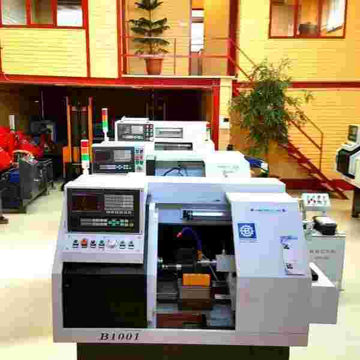

هنر، صنایع دستی و طراحیتراش سی ان سی CNC. تخت و مورب (CNC) اکبند
توافقی
ماشینسازی و بازرگانی بیگی، بزرگترین مرکز فروش دستگاههای تراش CNC نو در کشور، با ۴۰ مدل متنوع (بستر تخت/مورب، تارت خطی/برقی/هیدرولیک/هوشمند)، قطعات تایوانی با استاندارد CE، ۱۴ ماه گارانتی و ۱۲ سال خدمات پس از فروش، امکان تحویل فوری بیش از ۵۰۰ دستگاه، اقساط بدون بهره و بدون ضامن، با بیش از ۴۰ سال سابقه و ۱۸۰۰ همکاری صنعتی، در تهران (شادآباد) و شعبه اصفهان فعالیت میکند.
شماره تماس برای سفارش و همکاری
09127334133